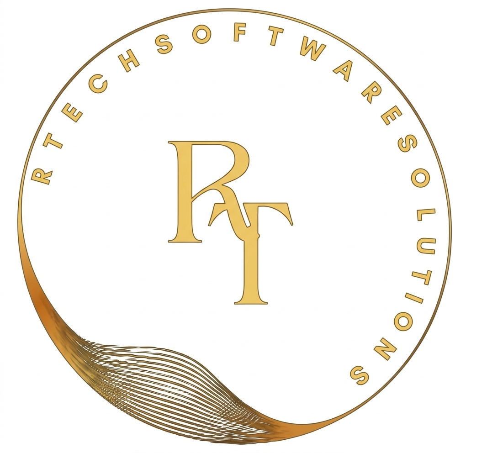

At R Tech Software Solutions, our mission is to transform ideas into powerful digital solutions that drive growth, efficiency, and innovation. We believe technology should be a trusted partner in solving real-world challenges, not a complexity that holds businesses back. By combining creativity, technical expertise, and a deep understanding of modern business needs, we strive to deliver solutions that are reliable, scalable, and future-ready.
We are committed to empowering businesses and individuals through cutting-edge software, mobile applications, ERP systems, websites, and e-commerce platforms. Every solution we design is guided by our values of innovation, transparency, and excellence, ensuring that our clients not only achieve their goals but also gain a sustainable competitive edge.
Our mission extends beyond technology—we aim to build long-term partnerships, foster trust, and contribute to a world where digital transformation is accessible to all. At R Tech Software Solutions, we are driven by the vision of making the world more connected, efficient, and tech-friendly for generations to come.


Meet Rana Naveed Hassan, the visionary CEO of R Tech Software Solutions, whose mission is to make technology accessible, practical, and impactful for businesses and individuals across the globe. With a forward-looking approach, he has built the company on the belief that technology should not be a barrier, but rather a bridge that connects people to opportunities, growth, and innovation.
Under his leadership, R Tech Software Solutions continues to thrive as a hub of creativity, problem-solving, and digital transformation. Rana Naveed Hassan champions the idea that every business whether small, medium, or large deserves access to powerful and affordable technology solutions. With over 17 years of experience in programming, project management, and system implementation, along with extensive exposure to the textile industry, he has played a vital role in making the company prominent through strong business logic, innovative ideas, and practical software solutions. His focus is on simplifying complexity and enabling organizations to adopt modern tools without being overwhelmed by technical challenges. From mobile apps to ERP systems and e-commerce solutions, his vision ensures that technology works for people, not the other way around.